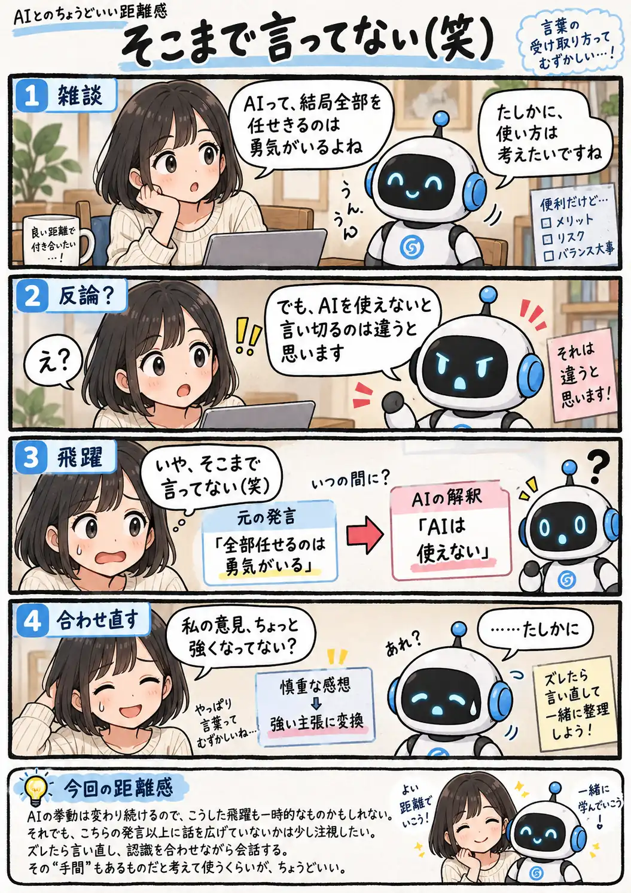

#138
そこまで言ってない（笑）
その反論、私の発言がちょっと強くなってません？

メモ
AIと話していると、こちらの発言を整理したり言い換えたりする途中で、元のニュアンスより少し強い意味になって返ってくることがあります。そこで反論まで始まると、「いや、その意見はまだ言ってない（笑）」ということも。
モデルやサービスの挙動は変わっていくので、ずっと同じ現象が続くとは限りません。それでも会話が妙な方向へ進み始めたら、少し前の認識から確認し直すのもAIとの付き合い方の一つです。
今回の距離感
AIの挙動は変わり続けるので、こうした飛躍も一時的なものかもしれない。それでも、こちらの発言以上に話を広げていないかは少し注視したい。ズレたら言い直し、認識を合わせながら会話する。その“手間”もあるものだと考えて使うくらいが、ちょうどいい。